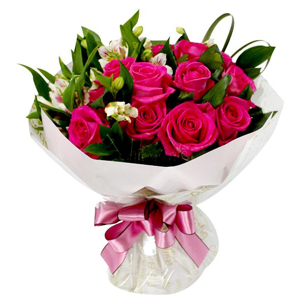
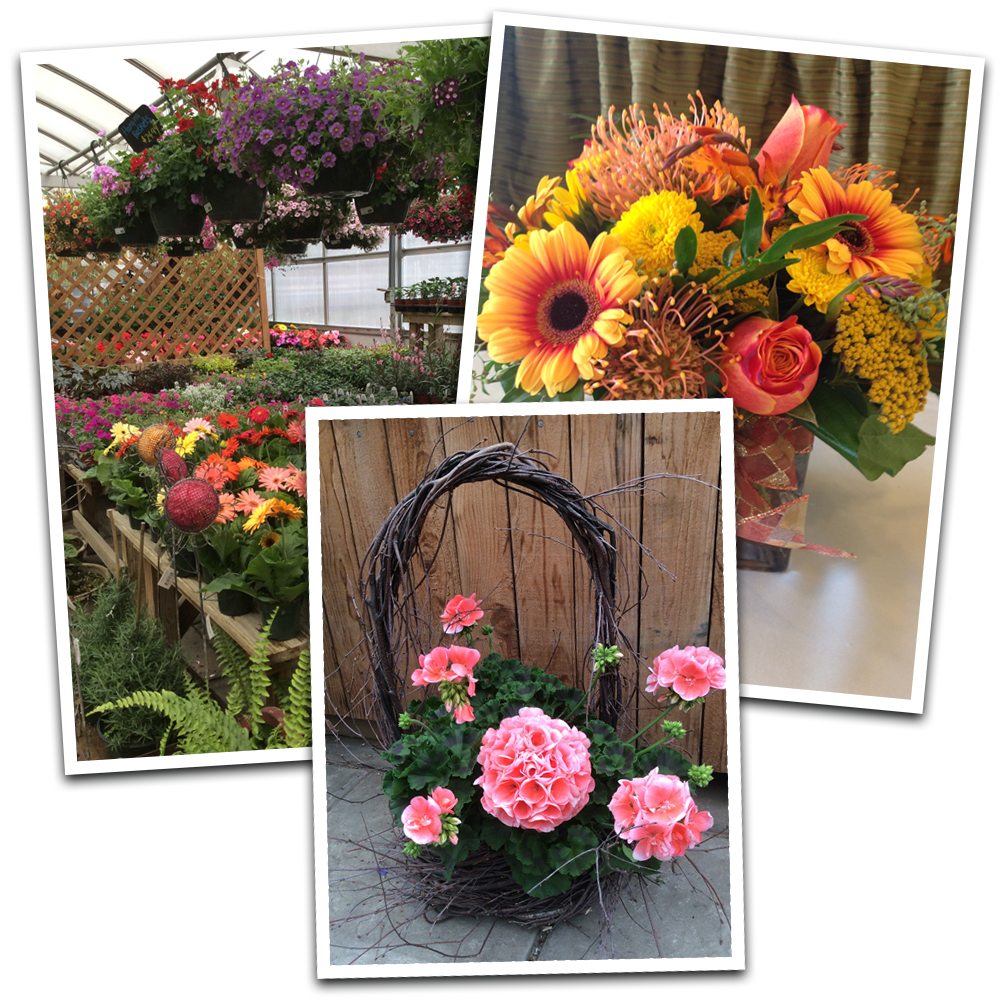
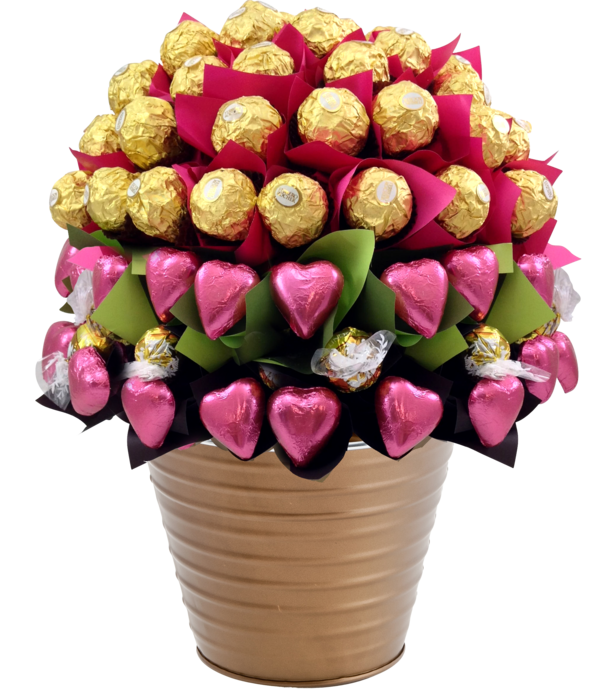
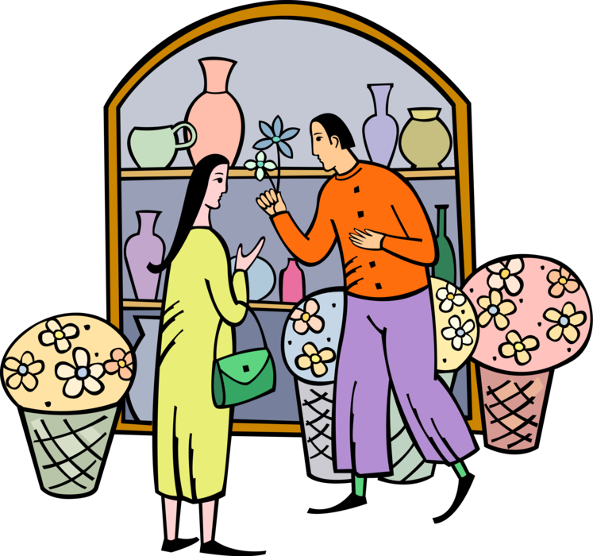

Floristería EdenAcompañándote en todo momento
¡Floreciendo Nicaragua!
Especialidad
Nuestros Floristas son miembros de nuestra familia, este vínculo nos ha permitido tener un compromiso más real y profundo por parte de nuestro equipo florista al momento de realizar cada arreglo desde: arreglos frutales, flores variadas, arreglos tropicales, arreglos para eventos etc.
Valores
En Floristería Eden sabemos la importancia de las flores en cada momento y experiencia de nuestras vidas, formando parte de cada momento mágico e inolvidable; por ello tratamos de reflejar los sentimientos más profundos en cada arreglo y en el servicio que ofrecemos.
Servicios
En nuestra floristería podrá encontrar la asesoría que necesita para idear el arreglo ideal en cada momento; adecuándonos a sus necesidades, presupuesto y vivencia que este atravesando, ayudándole a expresar su cariño a sus seres queridos, a través del idioma de las flores.
ARREGLOS ESPECIALES.
  CREAMOS ARREGLOS FLORALES PERSONALIZADOS
Piénsalo bien… Habla con el idioma universal de las flores...
¨FLORISTERÍA EDEN¨.
Yo soy la rosa de Sarón, el lirio de los valles. Como el lirio entre los espinos, así es mi amada entre las doncellas.